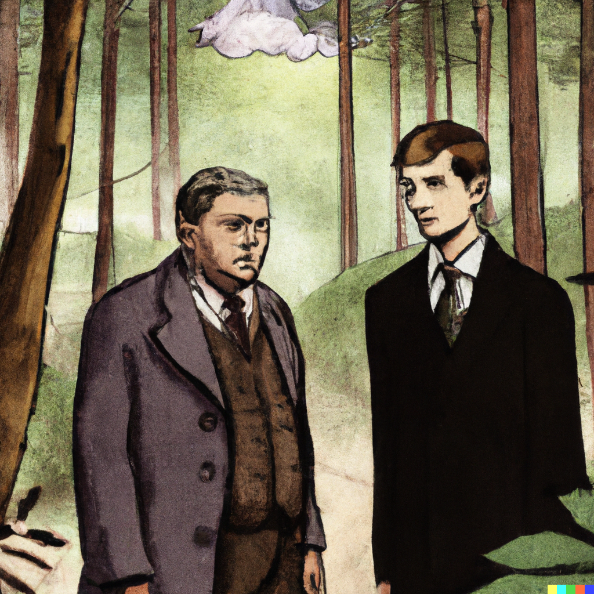

In Demian, Herman Hesse tells the story of Emil Sinclair, a young boy growing up in a world of conformity and hypocrisy. As Emil struggles to find his own identity and meaning in life, he is aided by his enigmatic classmate, Max Demian. Through their friendship, Emil begins to understand the complexities of human nature and the duality of good and evil.
One of the central themes of Demian is the search for self-discovery and authenticity. Emil's journey to understand himself and his place in the world is fraught with challenges and obstacles, including the expectations of his parents and the judgment of his peers. He is drawn to Demian not only by their shared interest in philosophy and literature, but also by Demian's bold and rebellious nature. Demian encourages Emil to embrace his own unique qualities and to reject the conventional norms of society.
As Emil begins to break free from the constraints of his upbringing, he encounters a variety of characters who represent different aspects of the human experience. Through his interactions with these characters, Emil learns to see the world in a new light and to understand the complexities of the human condition. He meets Pistorius, a wise and compassionate teacher who helps him to explore his own beliefs and values. He also meets the beautiful and enigmatic Beatrice, who becomes a symbol of Emil's spiritual and emotional growth.
In addition to its themes of self-discovery and individuality, Demian also explores the concept of duality and the coexistence of good and evil within every person. Emil grapples with the idea that good and evil are not absolute, but rather exist in a state of constant tension and conflict. This realization challenges Emil's beliefs and forces him to confront his own inner demons, leading him to a deeper understanding of himself and the world around him.
Despite its dark and sometimes difficult themes, Demian is ultimately a hopeful and inspiring novel. As Emil continues on his journey of self-discovery, he learns to embrace his own individuality and to reject the limitations of society. He also begins to find a sense of belonging and purpose, and to connect with other people on a deeper level. In the end, Emil emerges from his struggles a wiser and more self-aware person, with a new understanding of himself and the world.
I would highly recommend Demian to anyone interested in the works of Herman Hesse and the search for meaning and identity. The novel's complex and thought-provoking themes make it a timeless classic that continues to resonate with readers today.